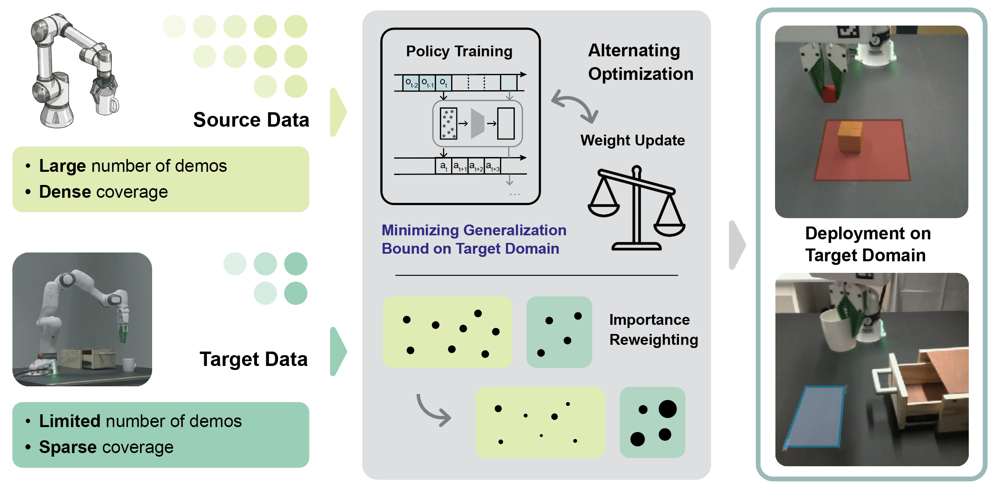

BEACON: Cross-Domain Co-Training of Generative Robot Policies via Best-Effort Adaptation
1Brown University · 2Harvard University
Abstract
We introduce BEACON—Best-Effort Adaptation for Cross-Domain Co-Training—a theory-driven framework for training generative robot policies with abundant source demonstrations and limited target demonstrations. BEACON casts cross-domain co-training as a discrepancy-aware importance-reweighting problem, jointly learning a diffusion-based visuomotor policy and per-sample source weights that minimize an objective informed by target-domain generalization guarantees. To make best-effort adaptation practical for high-dimensional sequence policies, we develop scalable instance-level discrepancy estimators, stochastic alternating updates for policy and weights, and a multi-source extension that balances heterogeneous source domains. Across sim-to-sim, sim-to-real, and multi-source manipulation settings, BEACON improves robustness and data efficiency over target-only, fixed-ratio co-training, and feature-alignment baselines. Importantly, even without an explicit alignment objective, BEACON achieves feature alignment as an implicit result of discrepancy-aware cross-domain co-training.
